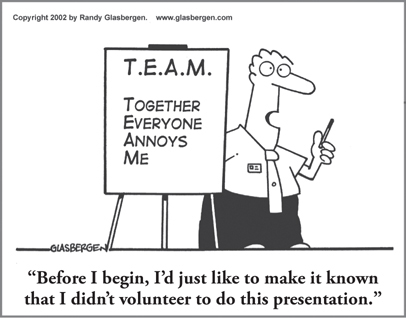

CHAPTER 12
Teams that Work: Getting Advantage from Difference

CHAPTER HIGHLIGHTS
 Similar-thinking, homogeneous teams can achieve a consensus of opinion quickly and will typically respond in ways that are predictably consistent with their quadrant preference, which is an advantage if speed is the primary goal.
Similar-thinking, homogeneous teams can achieve a consensus of opinion quickly and will typically respond in ways that are predictably consistent with their quadrant preference, which is an advantage if speed is the primary goal.
 Diverse, heterogeneous teams behave in entirely different ways. They experience difficulty in reaching consensus, but because of their diversity, they can be synergistic and therefore ideal for creative and complex assignments.
Diverse, heterogeneous teams behave in entirely different ways. They experience difficulty in reaching consensus, but because of their diversity, they can be synergistic and therefore ideal for creative and complex assignments.
 Once team members learn to function well in heterogeneous combinations, team membership can change with minimum effect on performance.
Once team members learn to function well in heterogeneous combinations, team membership can change with minimum effect on performance.
 Managers and team leaders play a key role in making sure that diverse, heterogeneous teams get the full benefit of their differences.
Managers and team leaders play a key role in making sure that diverse, heterogeneous teams get the full benefit of their differences.
 Organizations of more than 100 members are likely to have enough diversity of thinking available to provide an ideal pool from which to build homogeneous and heterogeneous teams.
Organizations of more than 100 members are likely to have enough diversity of thinking available to provide an ideal pool from which to build homogeneous and heterogeneous teams.
 High-performing teams share common characteristics, and each of these correlates with different thinking preferences.
High-performing teams share common characteristics, and each of these correlates with different thinking preferences.
A number of years ago, Shell Oil was working on a billion-dollar proposal to design a superior offshore rig and drilling method to optimize the deep-water oil exploration process. The company had brought together a team of world-class experts in each of the technical phases of offshore drilling, from drilling experts to offshore platform experts. The plan was to combine the team members’ expertise in a synergistic way so that they could create the optimum drilling process.
For all their impressive credentials and expertise, however, the team members were getting nowhere. The experts were so skilled in their own specific areas, and their expertise was so deep and narrow, that impenetrable silos had developed. No one could get through to anyone else. This group of world-class experts was as ineffective at this task as a classroom team of kindergarten students would have been.
What we and the team members themselves discovered as we worked with them was that there were major technical barriers between the individual areas of expertise. Different team members saw the problem very differently and were unable to relate to solutions based on technologies other than their own. They were bringing widely varying thought processes and perspectives to the table, all of which were important for developing this complex proposal, and all of which would be essential to implementing the project successfully, but if the team members couldn’t communicate with one another or see outside their silos, they would never get the technical synergy they were looking for.
Ultimately, after working through an understanding of their different perspectives using the HBDI Team Profile, and then applying several different creative processes, they jelled and were able to get the breakthroughs they hoped for. How many teams never really get there, or end up with suboptimal results?
Teams are the engine of the workplace today, and we need synergy to get results, whether the group is very different—heterogeneous—in makeup, like the team at Shell, or whether its members are more similar and homogeneous in background, skills, and perspectives. When it comes to thinking, there are advantages and disadvantages to both kinds of teams, and whether you’re assembling a team, leading one, or just participating on one, it’s important to know how to get the advantages of all that collected intelligence.
I Like the Way You Think: Consequences of Similar Thinking in Homogeneous Teams
Each individual in an organization has a distribution of mental preferences that can be displayed in the form of an HBDI Profile. As you learned earlier, an organization with more than 100 members is likely to have a well-balanced distribution of individual profiles in all four quadrants and all four modes. The composite average of all individuals approximates a balanced Whole Brain HBDI Profile. Because of the broad and relatively equal distribution of the employee pool across the Whole Brain Model, combined with the functional similarity that is often present, it is easy to form teams of five or six individuals who have approximately the same profile—that is, their mental preferences are quite homogeneous, so they’re more similar than different in their thinking (see Figure 12-1).
FIGURE 12-1 Examples of composite HBDI Profiles for quadrant-specific homogeneous teams.
Homogeneous Teams: How Each Quadrant Shows Up
Chances are you have been on such a similar-thinking team before. Functional teams, for example, are frequently similar in their thinking. The impact of forming teams this way can be fascinating to explore. It’s something that has been demonstrated many times in programs we have run (both public and inside organizations) with about 100 business managers in attendance. Here’s an example of what occurs: we’ll create four homogeneous teams, each with a strong lead characteristic in one of the four quadrants—that is, a five-person A-quadrant team, a five-person B-quadrant team, a five-person C-quadrant team, and a five-person D-quadrant team. In each case, the strongest preference in each of the teams will be in a particular quadrant.
I then simultaneously ask the members of all four teams to describe the work that they find most satisfying and that they’re most attracted to. There will be highly consistent responses within each five-member team, but these responses will be extremely different from one team to the next. For example:
• The A-quadrant-oriented team will quickly reach a consensus around work activities that are logical, analytical, quantitative, and rational.
• The B-quadrant team, on the other hand, will quickly coalesce around organized, structured, detailed, and administrative-type work.
• For the C-quadrant team, working with people will be an absolute must. The team members will cite a need for their work to give them an opportunity to develop interpersonal relationships, to express their feelings, and to work in tandem with other people.
• In contrast, those in the D-quadrant group will describe themselves as creative, conceptual, and experimental risk takers.
If this same task were given to the same four teams, but instead of having them respond in one large room, you sent them to four separate conference rooms and gave them 15 minutes to reach a consensus and return prepared to report, the behaviors of each team would also be quite different. The first groups back would predictably be the A and B teams. The C team would typically return a few minutes late. But in 90 percent of the cases, the D team would have to be sent for, because D-quadrant-oriented people would have the most difficulty complying with the time rules of the exercise.
A general characteristic of homogeneous teams is the ability to reach a consensus quickly. People who think alike tend to come to an agreement quite rapidly. Since they are on the same wavelength, they have similar interests. Words mean about the same thing to them, and their approach to a given situation is likely to be quite similar.
You can imagine how comfortable it is to be on a team in which everyone “gets” you and has a similar perspective on the problem or issue and how to go about solving it. Morale is generally high, and conflict is low. People will enjoy themselves and feel that they are both heard and validated. There are times when this is a huge advantage. If a quick consensus is what you need, and speed is your ultimate goal, a homogeneous team is the way to go.
But there are pitfalls. “Groupthink” is a term we have all heard and most likely experienced for groups that think similarly and get stuck when they need breadth of thinking. These are circumstances in which a diverse, heterogeneous group can really have a differentiating impact.
What’s the Difference? Diverse, Heterogeneous Teams
What would happen if you reconfigured the four teams into four new teams, each representing a fairly equal distribution of preferences across the four quadrants (see Figure 12-2)? Each team would be a little composite “whole brain.” Now, if you gave the teams the same assignment to identify the work they are most attracted to, it would be extremely difficult for each team to reach a consensus. And if they were assigned to four different rooms and given 15 minutes to reach agreement, none of the teams would be back on time; all of them would have been delayed by the different perspectives at the table. A characteristic of heterogeneous teams is the difficulty of reaching swift consensus.
FIGURE 12-2 Examples of reorganizing a population of homogeneous teams into heterogeneous Whole Brain teams.
Another example of the differences in team behavior and outcomes occurs in problem-solving situations. In our first example, we form four homogeneous teams, give them an identical problem situation, assign them to separate team rooms, and give them four hours to come up with a solution. Typically, all four teams of this type will report back in approximately half the time allocated with a range of reasonably adequate solutions. The A and D teams will have the most technically astute and unique solutions, respectively. The B team will usually have a safer solution, but will have thought through all of the execution and logistics details and will already have a plan in place. And the C team will often have had a great discussion and listened to all of the ideas at the table, but the desire for consensus will have slowed them down a bit. If the exercise is repeated with the heterogeneous teams, all the teams are likely to take the full amount of time, and several of them will ask for more time. Instead of a single solution, each of the teams will have several alternative solutions. In most cases, these alternative solutions will be superior to the consensus solutions reached by the homogeneous teams. Words like comprehensive, creative, and innovative would describe the heterogeneous solutions. Words like obvious or adequate would characterize the homogeneous team solutions.
These conclusions are based not on one or two samples, but on literally hundreds of workshop and real-world consulting experiences working with real teams and critical business challenges. A six-year study at the U.S. Forest Service1 also confirmed what we’ve seen in these individual experiences: teams that are balanced in terms of thinking preferences are more effective; they consider more options and make better decisions. The study also found that when faced with a complex challenge, whole-brained teams were 66 percent more efficient than homogeneous teams. In fact, 70 percent or more of the teams were “successful” at the assigned project when they were whole-brained in makeup, versus 30 percent or less when they were not.
What are the implications for you, as a leader, manager, or team member? The more complex the challenge you have to deal with, the greater the need for breadth of thinking, with team members who have preferences that are well distributed across analytical A-quadrant thinking, more structured B-quadrant thinking, interpersonal C-quadrant thinking, and risk-taking D-quadrant thinking. In other words, difference gives you the advantage.
But as the Shell example showed, it’s not as simple as just bringing together a group of people who think differently and have unique viewpoints. There are some key issues that need to be understood and resolved before the benefits of these different teams’ concepts can be realized.
While in many instances, competition between like-minded team members can occur, the power of the homogeneous approach to team formation typically lies in rapid consensus building. This can be an advantage when time is of the essence, but it can also produce less than optimum results, since the rapidly formed consensus excludes alternative approaches that may be essential to the situation at hand. Another likely outcome of homogeneous groups is that they tend to rapidly establish group norms and an overall group culture. In the nonbusiness world, gangs and tribes exhibit some of these same characteristics.
The heterogeneous teams face an entirely different group issue—dealing with differences among the members. In the ideal heterogeneous group, the differences are significant. One person may have extremely strong preferences for logical, analytical, quantitative processes and a distaste for anything dealing with feelings and emotions, while another team member may have the exact opposite set of preferences. Another pair might be made up of a highly experimental, risk-oriented, adventurous spirit who abhors the status quo, and a highly traditional and security-minded individual. These differences can be synergistic and positive, or they can be hostile and disruptive.
A board member at a nonprofit described a situation that became so difficult that during their monthly meetings, she could hardly stand sitting next to the person who was most different from her. Each meeting became more and more uncomfortable. Results began to wane, and the rest of the team tired of the internal “noise” it was creating. Finally, one of the two resigned from the board.
Have you had an experience with a diverse team where one or two members (perhaps even you) had differences that became toxic to the whole team experience? The good news is, it does not have to be that way.
Getting the Benefits of Cognitive Differences
To optimize team performance, it is essential for the heterogeneous team to build a climate that not only tolerates differences but embraces them. Crucially, this means that everyone needs to recognize how and why different thinking preferences contribute to overall objectives, and team members have to be able to communicate effectively across quadrants, regardless of their own preferences; they have to speak and listen in a way that respects others’ thinking preferences. This often takes more time up front, but it is clearly worth the investment.
Managers and team leads play a pivotal role in ensuring that the team gets the benefits of differences rather than devolving into conflict and chaos. The more diverse a team is, the more important it is to have a skilled leader in place who can manage, facilitate, and incorporate Whole Brain Thinking practices within the team. If you are assembling or leading teams, you have to set them up for success by creating an environment in which diverse thinking is respected, managed, heard, and applied. In my experience, the earlier this happens, the better. By giving the team members a clear picture of their thinking, the leader will have the tools and language to accelerate that process.
HBDI practitioner Bob McKown describes how, as he used the HBDI Team Profile with the health and wellness department of a large university and medical center, the team immediately began to see and easily discuss the differences they had. This management team comprised physicians, researchers, psychologists, counselors, occupational health professionals, and nurses, making for an extremely diverse team profile, with strong preferences occurring in every quadrant.
As they explored the HBDI Preference Map in the team report, it became clear that the director of the department had a strong upper A/D preference, while, in contrast, many of the team members had strong B-, C-, and B/C-quadrant preferences (see Figure 12-3). As a result, they frequently struggled with communicating and interacting with the director. She often asked questions that they either had never thought of or, if they had, were not prepared to answer. Likewise, the director was frustrated that so many of the people on her team trudged through strategic and budget conversations with great difficulty. The good news was that the team had breadth of thinking; the challenge was making sure that it didn’t get in the way.
FIGURE 12-3 HBDI Preference Map showing the director’s preferences related to the rest of the team’s.
With the insights from the HBDI Preference Map, everyone was able to come together and develop intentional strategies to use the Whole Brain Model to improve communication by purposefully recognizing the unique differences in thinking within the team. Then, as Bob tells it, “An amazing thing happened.” As they discussed the different thinking preferences, team members with a particular strength in a given quadrant began to volunteer to help others who had lesser preferences in that quadrant in their communication efforts. In effect, they began to identify “thought leaders” within each of the four quadrants.
The team members then began to plan how they could better apply the specific quadrant strengths of the staff members and discussed how they needed to ensure heterogeneous makeup of all their project teams. Ultimately, the Whole Brain Model has created a common language within this diverse team. Many staff members now display their mini HBDI Profile cards at their desks, and the director has a list of the preferences of each member of her staff on the board next to her desk for easy reference so that she can continuously look for ways to leverage the cognitive diversity available to her.
The advantages of cognitive diversity in teams can be applied to creativity, problem solving, strategy formation, and other critical business activities. However, there has to be a willingness to make an investment up front in ensuring that team members understand how each person’s preferences contribute to the task at hand and how all the members can work together effectively to fully leverage the diversity of thinking available to the group. Teams are often so focused on getting to the task that they bypass this essential step. This is even more critical when the team is virtual, as this creates more opportunities for miscommunication. No matter what the objective or function of the team, human assets are too precious and costly to waste by putting people together on a haphazard basis without understanding the consequences.
In the case of heterogeneous team formation, some theorists might say, “Oh, this is just about applying constructive dissonance.” My answer is, “Absolutely not!” In constructive dissonance, the objective would be to sustain the dissonance in the hope that something positive would result from time to time. The dissonances are constant. The heterogeneous diversity that I’m talking about is based on synergy, which resolves the diversity with a high-value outcome that everyone sees the benefit from. When this occurs, it doesn’t take long for diverse individuals to begin to respect and honor the differences that brought about the synergy. In my experience, this is a much more positive way to take advantage of the reality of differences in the workplace.
When team members understand the importance of having a breadth of thinking and how each person’s thinking adds value, differences are viewed in a nonjudgmental way, and the team has a new context in which to tackle the inevitable challenges that come up.
A professor who uses this approach in MBA team programs explains it this way:
Once they get the concept that we all have brains, we just use them differently, and that we need all of those differences to get the job done, they get over the typical quibbling that takes up so much team energy and drags down the team’s effectiveness.
Too often, the time spent up front is written off because it’s considered yet another one of those typical “feel-good” team-building activities with no concrete outcomes. Not at all! This is about setting the stage and developing the processes to harness the diversity of thought necessary to tackle the tough issues that we, as managers, and our organizations are facing today. This is an investment that pays off indefinitely: experience has shown that once people have felt the stimulation, excitement, and improved outcomes of being on a well-managed, high-performing heterogeneous team, they can participate in other diverse teams without going through an elaborate learning curve. In other words, heterogeneous team skills, once acquired, are transferable to other heterogeneous group situations. Given the 100-member organization described earlier, these people could, through a series of team engagements, become a highly flexible candidate pool for almost limitless combinations of heterogeneous teams. Such an organization would be well on its way toward being a critical mass with great high-performing, creative potential, ready to unleash that potential at any given time. As the March 2014 Harvard Business Review article “The Case for Team Diversity Gets Even Better” put it: “When teams are diverse, meaningful innovation is more likely to happen.”
High-Performance Teams
The ability to profile employees’ mental preferences provides an opportunity to assemble teams that can perform at quantum levels higher than the norm. Not only can the profile data provide the basis for building a heterogeneous team that has a greater potential for effective problem solving and innovation, but profile data can also reveal the presence of a critical mental skill—that is, a particular mental preference of the team members that allows the team to have a common capability and still be heterogeneous.
For example, research by our partners in Germany has shown that one of the specialized mental capabilities that all high-performing teams of software engineers have in common is the ability to mentally visualize the objective of their software design. Having a unified view of the design objective greatly facilitates the team’s creative interaction around the proposed design. Imagine for a moment the difference between a diverse team that has a common design objective and one that doesn’t have this common point of view. In the first case, you have the analogy of a jigsaw puzzle with five or six people pooling their resources and finding and inserting the right pieces. In the second case, you have the five or six people working on separate puzzles that have nothing in common other than that they are jigsaw puzzles.
As in this case, this common characteristic of visual capability can be identified by applying the HBDI and a supplemental questionnaire that is relevant to the team task. This combined input will greatly facilitate the building of a team whose high-performance potential has a greater chance of being achieved.
Another characteristic of high-performance teams is the ability to bring more than one creative process to bear on a particular problem situation. The array of problem-solving processes that exists is impressive—just Google “problem-solving tools and processes” to see. (See Figure 22-1 in Chapter 22 for a Whole Brain array of creative processes.) Yet all too often, teams fall back on only one, namely, brainstorming or some variation on it. Imagine that, in this case, we are not using a single process to develop ideas, but are applying multiple processes in a manner that could be called “process storming.” The number and quality of ideas generated by this creative problem-solving strategy are significantly greater than what would come from a single process. Good teams that apply process-storming techniques can become high-performing teams.
An important characteristic of high-performing teams that is confirmed by much of the research on team performance by Jon Katzenbach2 and others is clarity of purpose and goals. Teams that share that results orientation—a more A-quadrant characteristic—will more easily endure the natural ups and downs of the team dynamic and push through to performance because they’re keeping their eye on the goal.
Accountability is another characteristic that is typical of teams with top performance. This more B-quadrant characteristic helps drive a sense of both individual and group commitment and reduces the friction often created by team members who may not always pull their weight.
Other characteristics of high-performance teams include passionate intensity, commitment, and focus. The team members’ level of interest in the task at hand is usually very high, so there is also a high level of inner motivation to apply to the team task. This strong motivation contributes to focus on the team task and commitment to achieve its goal. It is frequently the case that the strength of an individual’s preference is predictive of the passionate intensity of his or her team interaction. HBDI Profiles that are particularly “spiky” provide advanced evidence of the likelihood of this passionately intense team interaction occurring.
Again, this level of passion and intensity requires experienced team leadership to deal with the potential interpersonal dynamics. In other words, just assembling a diverse team isn’t enough. Managers or team leaders have to make sure that the diverse team members take the time not only to acknowledge their differences, but also to determine how their varied cognitive preferences will contribute to achieving the outcomes they’ve been tasked with. They also serve an important function as facilitators to ensure that the team hears and takes advantage of the full breadth of thinking available to it. In the Harvard Business Review article “Putting Your Company’s Whole Brain to Work,”4 Dorothy Leonard and Susaan Straus emphasize that without an effective leader, the team can devolve into unproductive conflict or conflict avoidance, in which case one approach dominates to the point that other perspectives remain unheard. Either way, the value of all that diversity is lost.
High-performance teams made up of diverse members who have the common characteristic of imagination are also likely to be very creatively productive. Teams with diverse preferences but with the common quality of imagination are usually capable of higher forms of synergy than teams without these characteristics. Imagination helps them make effective use of diverse capabilities such as logic, analysis, and intuition, as well as organizational and interpersonal skills.
Even with all of these characteristics in place, however, an essential ingredient in the recipe for team performance is the climate in which the team functions. The extent to which that climate is supportive, nonbureaucratic, flexible in meeting team needs, and rewarding of team performance represents the degree to which the team can take advantage of its own inner resources to achieve its goals without counterproductive interference from outside the team. Taken together, these ingredients contribute to high team performance. When there is a champion in the team or a management champion who is supportive of its work, the likelihood of team success is further optimized.
SO WHAT?
 Organizations can become a dynamic pool of diverse, synergistic team members who work together productively to drive business outcomes.
Organizations can become a dynamic pool of diverse, synergistic team members who work together productively to drive business outcomes.
 Mentally balanced teams consider more options, make better decisions, and exceed expectations more often than homogeneous teams.
Mentally balanced teams consider more options, make better decisions, and exceed expectations more often than homogeneous teams.
 The more heterogeneous (mentally diverse) a group is, the more it needs a multidominant facilitator/leader.
The more heterogeneous (mentally diverse) a group is, the more it needs a multidominant facilitator/leader.
 Heterogeneous groups can be extremely creative and successful, or they can “crash” if they do not take the steps and the time necessary to find synergy.
Heterogeneous groups can be extremely creative and successful, or they can “crash” if they do not take the steps and the time necessary to find synergy.
 The first step to increased team performance is providing the team members with data on how they are similar or diverse in their thinking, and the implications for the task at hand. Too often, this step is skipped.
The first step to increased team performance is providing the team members with data on how they are similar or diverse in their thinking, and the implications for the task at hand. Too often, this step is skipped.
 A supportive, noninterfering team climate is essential to sustained high performance.
A supportive, noninterfering team climate is essential to sustained high performance.
 Virtual teams need a common language even more than colocated teams to increase the speed of relationship building and decrease miscommunication.
Virtual teams need a common language even more than colocated teams to increase the speed of relationship building and decrease miscommunication.